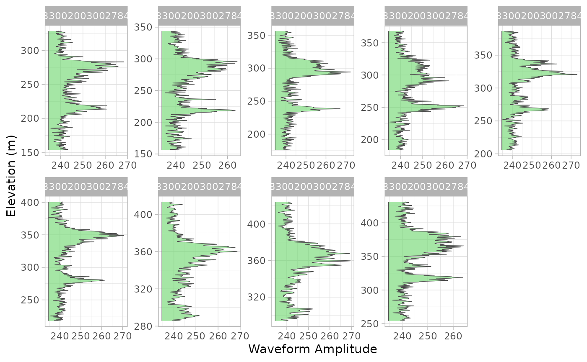
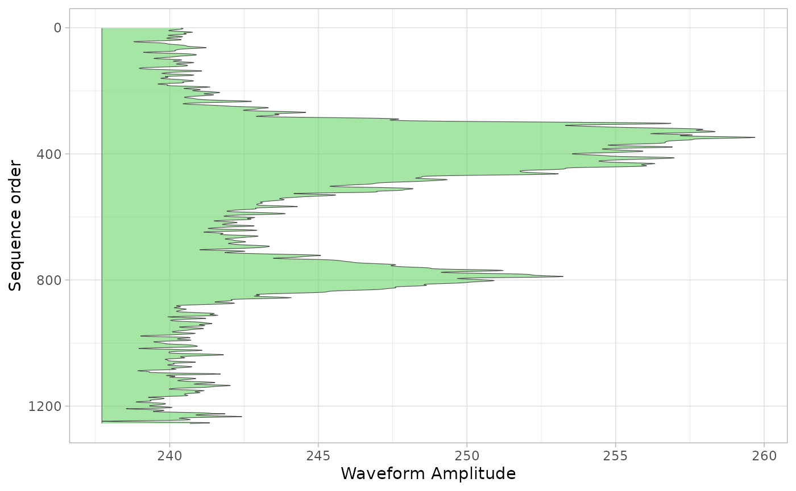

This vignette demonstrates how to use the chewie package
to download and extract GEDI Level 1B waveforms.
First let’s load the chewie package and the
ggplot2 package for plotting.
First, we define an area of interest. In this case, we will use
prairie creek national park as our area of interest. The
chewie package provides a number of example spatial vector
data sets that can be used for this purpose. Here we use the
prairie-creek.geojson data set, which is a simple polygon
defining the park boundary. You can alternatively use the
st_read() function to read in your own spatial vector
data.
pcreek <- system.file(
"geojson", "prairie-creek.geojson",
package = "chewie"
) |>
sf::read_sf()Now we can search for GEDI Level 1B products that intersect with our area of interest. We will search for products that were collected between January 1st and January 31st, 2023.
g1b_search <- find_gedi(pcreek,
gedi_product = "1B",
date_start = "2023-01-01",
date_end = "2023-01-31"
)
#> ✔ Using cached GEDI find result
print(g1b_search)
#>
#> ── chewie.find ───────────────────────────────────────────────────────────────────────────────────────────────────────────────────
#> • GEDI-1B
#> id time_start time_end url cached
#> <char> <POSc> <POSc> <char> <lgcl>
#> 1: G2755093540-LPCLOUD 2023-01-25 05:14:31 2023-01-25 06:47:21 https://data.lpdaac.earthdatacloud.nasa.gov/lp-pro... TRUE
#> 1 variable(s) not shown: [geometry <sfc_POLYGON>]
#>
#> ──────────────────────────────────────────────────────────────────────────────────────────────────────────────────────────────────You’ll see that only one granule was found. The returned
gedi.find object contains information about the search,
including whether or not the files are cached locally.
Now we can download the GEDI Level 1B products. However, note that
the grab_gedi() function will not download the products if
they are already cached locally. It first checks the cache and grabs the
relevant files if they exist. If they do not exist, they’ll be
downloaded from the LPCLOUD bucket. {chewie} will, by default only
download specific data columns. There are many variables contained in
the raw hdf5 files.
gedi_1b_arrow <- grab_gedi(g1b_search)
#> ✔ All data found in cache
#> Warning: Potentially unsafe or invalid elements have been discarded from R metadata.
#> ℹ Type: "externalptr"
#> → If you trust the source, you can set `options(arrow.unsafe_metadata = TRUE)` to preserve them.
#> Potentially unsafe or invalid elements have been discarded from R metadata.
#> ℹ Type: "externalptr"
#> → If you trust the source, you can set `options(arrow.unsafe_metadata = TRUE)` to preserve them.The grab_gedi() function returns a
arrow_dplyr_query object. If the user wishes to carry out
further filtering (for example using quality flags), this should be done
at this stage to avoid loading unnecessary data into memory.
In order to access the data we must first collect the data into a
data frame. This could be done using dplyr::collect.
However, the collect_gedi() function is a wrapper around
dplyr::collect that also converts the data to an
sf object, immediately providing a spatial context for the
data.
g1b_sf <- collect_gedi(gedi_1b_arrow, g1b_search)
#> Warning: Potentially unsafe or invalid elements have been discarded from R metadata.
#> ℹ Type: "externalptr"
#> → If you trust the source, you can set `options(arrow.unsafe_metadata = TRUE)` to preserve them.
#> Potentially unsafe or invalid elements have been discarded from R metadata.
#> ℹ Type: "externalptr"
#> → If you trust the source, you can set `options(arrow.unsafe_metadata = TRUE)` to preserve them.
print(g1b_sf)
#> Simple feature collection with 349 features and 82 fields
#> Geometry type: POINT
#> Dimension: XY
#> Bounding box: xmin: -124.0638 ymin: 41.39252 xmax: -123.9959 ymax: 41.43934
#> Geodetic CRS: WGS 84
#> # A tibble: 349 × 83
#> all_samples_sum beam channel delta_time date_time master_frac
#> * <int> <int> <int> <dbl> <dttm> <dbl>
#> 1 15977748 0 0 159862145. 2023-01-25 06:09:05 0.0832
#> 2 15982175 0 0 159862145. 2023-01-25 06:09:05 0.0915
#> 3 15974693 0 0 159862145. 2023-01-25 06:09:05 0.0998
#> 4 15983026 0 0 159862145. 2023-01-25 06:09:05 0.108
#> 5 15991944 0 0 159862145. 2023-01-25 06:09:05 0.116
#> 6 15978705 0 0 159862145. 2023-01-25 06:09:05 0.125
#> 7 15973741 0 0 159862145. 2023-01-25 06:09:05 0.133
#> 8 15981653 0 0 159862145. 2023-01-25 06:09:05 0.141
#> 9 15991093 0 0 159862145. 2023-01-25 06:09:05 0.149
#> 10 15999630 0 0 159862145. 2023-01-25 06:09:05 0.158
#> # ℹ 339 more rows
#> # ℹ 77 more variables: master_int <int>, noise_mean_corrected <dbl>,
#> # noise_stddev_corrected <dbl>, nsemean_even <dbl>, nsemean_odd <dbl>,
#> # rx_energy <dbl>, rx_offset <int>, rx_open <int>, rx_sample_count <int>,
#> # rx_sample_start_index <int>, selection_stretchers_x <int>,
#> # selection_stretchers_y <int>, shot_number <chr>, stale_return_flag <int>,
#> # th_left_used <int>, tx_egamplitude <dbl>, tx_egamplitude_error <dbl>, …
plot(g1b_sf[0], axes = TRUE)
plot(attributes(g1b_search)$aoi, add = TRUE, border = "#7700ff")
So, here’s the cool bit about the way the Level-1B data are
extracted. We can access the full waveform for every shot in the data
set by using the extract_waveforms() function. This
generates a long-form data frame with waveform amplitude, relative
elevation, and shot number for each shot. This enables the combined
analysis and comparison of many waveforms across space (and time when we
have multiple granules).
For example, here we take 8 of the waveforms…
g1b_wvf <- extract_waveforms(g1b_sf[100:108, ])
print(g1b_wvf)
#> # A tibble: 9,881 × 4
#> shot_number date_time rxelevation rxwaveform
#> <chr> <dttm> <dbl> <dbl>
#> 1 233300000300278259 2023-01-25 06:09:05 457. 247.
#> 2 233300000300278259 2023-01-25 06:09:05 457. 247.
#> 3 233300000300278259 2023-01-25 06:09:05 457. 245.
#> 4 233300000300278259 2023-01-25 06:09:05 457. 243.
#> 5 233300000300278259 2023-01-25 06:09:05 456. 242.
#> 6 233300000300278259 2023-01-25 06:09:05 456. 241.
#> 7 233300000300278259 2023-01-25 06:09:05 456. 242.
#> 8 233300000300278259 2023-01-25 06:09:05 456. 243.
#> 9 233300000300278259 2023-01-25 06:09:05 456. 245.
#> 10 233300000300278259 2023-01-25 06:09:05 456. 246.
#> # ℹ 9,871 more rowsAnd plot them using ggplot2…
wvf_ggplot <- function(x, wf, z, .ylab = "Elevation (m)") {
wf <- sym(wf)
z <- sym(z)
ggplot(x, aes(x = !!z, y = !!wf)) +
geom_ribbon(aes(ymin = min(!!wf), ymax = !!wf),
alpha = 0.6, fill = "#69d66975", colour = "grey30", lwd = 0.2
) +
theme_light() +
coord_flip() +
labs(x = .ylab, y = "Waveform Amplitude")
}
wvf_ggplot(g1b_wvf, "rxwaveform", "rxelevation") +
facet_wrap(~shot_number, ncol = 5, scales = "free")
We can also calculate the mean waveform for these shots and plot it. Note that this may not be particualtly helpful for all contexts, but it provides an indication of the power of having access to all waveforms in a single dataset.
g1b_wvf |>
group_by(shot_number) |>
arrange(rxelevation) |>
mutate(id = dplyr::n():1) |>
ungroup() |>
group_by(id) |>
summarise(
mean_wvf = mean(rxwaveform),
mean_elev = mean(rxelevation)
) |>
wvf_ggplot("mean_wvf", "id", .ylab = "Sequence order") +
scale_x_reverse()
if (file.exists(".Renviron")) {
file.remove(".Renviron")
}
#> [1] TRUE